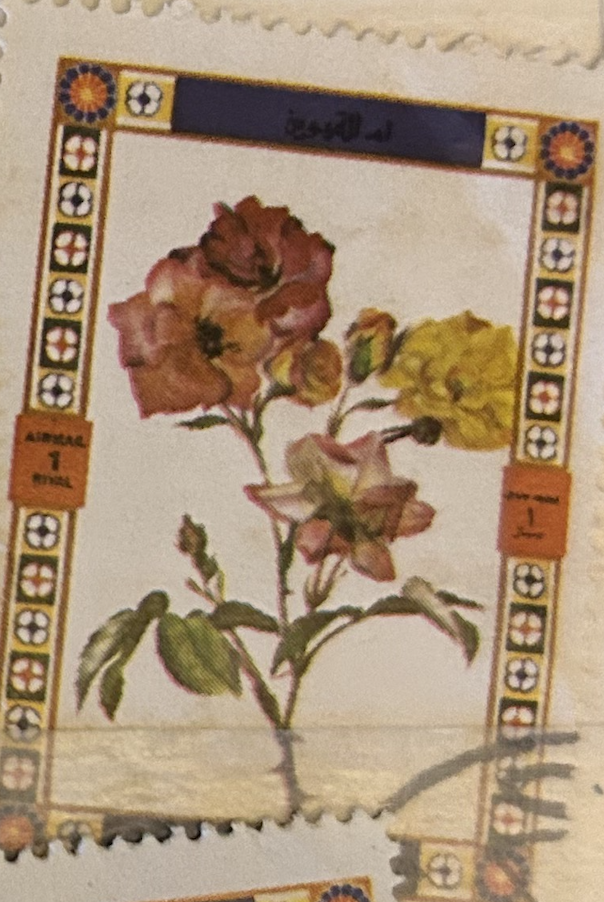
| SOURCE | TITLE| IMAGE MATCH | click to source page |
| Perangko Umm-Al Qiwain | 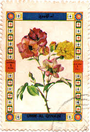 | |
| Umm-Al-Qiwain |  | |
| Alamy | UMM AL-QUWAIN - CIRCA 1972: a stamp printed in the Umm al-Quwain shows Rose variety, Flower, circa 1972 Stock Photo - Alamy |  |
| Alamy | Umm al quwain nature hi-res stock photography and images - Alamy |  |
| eBay | Manama 1969 Roses Flowers Plants Nature 6v set Imperf MNH | eBay |  |
| eBay | STAMPS4COLLECTORS | eBay Stores | 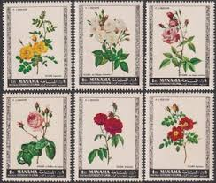 |
| Amazon.com | Amazon.com: Ajman 405A-410A (Complete.Issue.) fine Used/Cancelled 1969 Rosen (Stamps for Collectors) Plants/Mushrooms : Toys & Games | 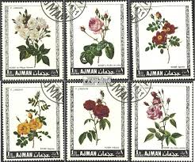 |
| Etsy | Handmade Flower Painting: Indian Vintage Art With Real Gold (6.5x9 Inches) - Etsy | 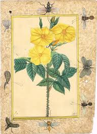 |
| LiveAuctioneers | Prints, Heinrich Ulrich, Botanicals | 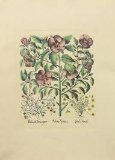 |
| TPT | Vintage Inspired Flower Flash Cards by Our Handcrafted Life | TPT | 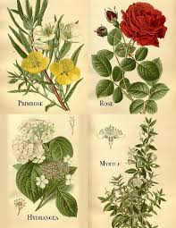 |
| Roses Postage Stamp Set // Manama 1969 Used Vintage Postal | Etsy | Stamp, Postage stamps, Stamp set |  | |
| The Art Scavenger | Free Floral Vintage Printables — The Art Scavenger | 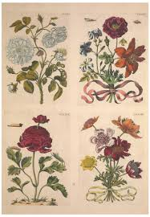 |
| eBay | Manama Flora Flowers Roses set 1970 MNH B-6F | eBay | 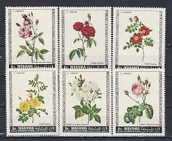 |
| Pngtree | Rose Postcard Photos, Download HD Pictures - Pngtree |  |
| Sanderus Antique Maps | Hand coloured flower print by Emmanuel Sweerts. | Sanderus Antique Maps - Antique Map Webshop | 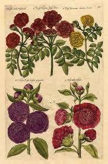 |
| Alamy | UMM AL-QUWAIN - CIRCA 1972: a stamp printed in the Umm al-Quwain shows Rose variety, Flower, circa 1972 Stock Photo - Alamy | 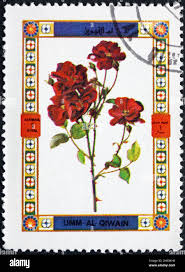 |
| georgeglazer.com | George Glazer Gallery - Antique Botanical Prints - Set of Six Daniel Rabel Botanical Prints | 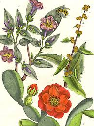 |
| maatcorptravel.com | Yellow Austrian Rose and Cinnamon Rose and Orange Lilly, 1747, Paper, Set of 3 | 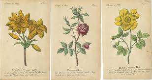 |
| efilatelija.lt | Ajman stamps (1969) for sale. Roses | 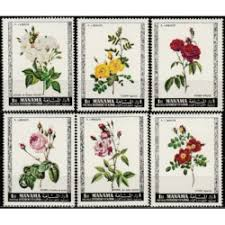 |
| Etsy | HeatherSkyDesign - Etsy | 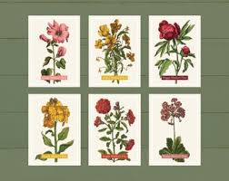 |
| rumbocierto.cl | Two Antique Botanical Engravings Prints 1719 | 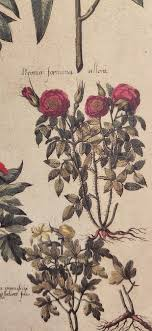 |
| eBay | Ajman Lot "Blumen" postfrisch ** (B-177) | eBay | 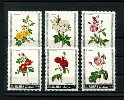 |
| eBay | AJMAN MNH FLOWERS | eBay |  |
| Assorted Romanian and flora stamps : r/philately | 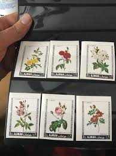 | |
| Etsy | Andre Richard Pink Roses - Etsy New Zealand | 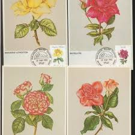 |
| Invaluable.com | Sold at Auction: Basilius Besler, Basilius Besler | 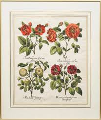 |
| 1st Art Gallery | Nicolas Robert Oil Painting Reproductions for Sale | 1st Art Gallery | 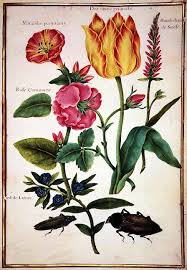 |
| eBay | Ajman 1969 Roses Flowers Plants Nature 6v set MNH | eBay | 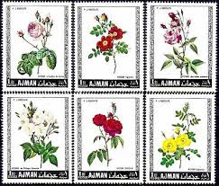 |
| Free stamp catalogue | Stamps with the theme Flowers & Plants - Freestampcatalogue.com - The free online stampcatalogue with over 500.000 stamps listed. | 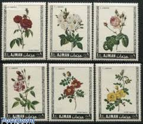 |
| Etsy | England Vintage Flower Scrap Flowers Paper Scraps MLP Out of Print 1457A - Etsy | 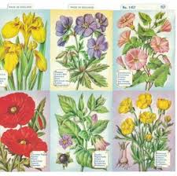 |
| Mary Williams Fine Arts | Antique Botanicals - MARY WILLIAMS FINE ARTS | 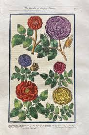 |
| Invaluable.com | Sold at Auction: Basilius Besler, After BASILIUS BESLER "Alcea Syriaca" Engraving | 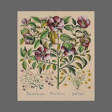 |
| Album Online | Flora Women's Tank Tops for Sale by Album | 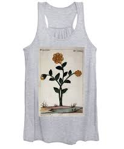 |
| Tumblr | Tyrtylius' records: Rosa lutea: Rose. From a copy of Pedanius... | 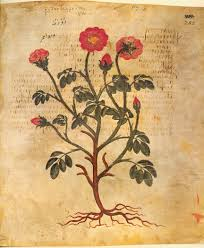 |
| academiccourseworkservices.com | The Saturday Book 11th Year 1951 Russell, Leonard [Edited By] | 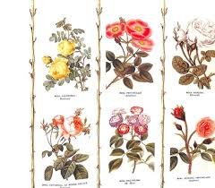 |
| Etsy | lifethroughlettersIE - Etsy | 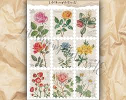 |
| eBay | Antique Print-INSECTS-ROSA INCARNATA-ROSE-PL. XIX-Merian-1730 | eBay | 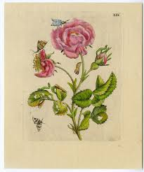 |
| Etsy | Patriotic Card / 30 Vintage Playing Cards Patriotic Summer Red, White & Blue Single Cards --great for Collage, Journals, Smash Books+ - Etsy | 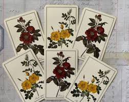 |
| eBay | ORIGINAL ANTIQUE ROSE PRINT: HAND COLORED WOODCUT: PARKINSON, LONDON 1629 | eBay | 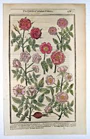 |
| TouchStamps | Stamp: Rose (Umm al-Qiwain 1972) - TouchStamps | 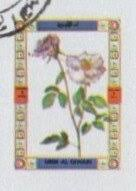 |
| Fine Art America | Rosa Damascena Wall Art for Sale - Fine Art America | 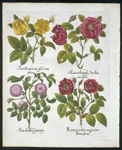 |
| Amazon.ca | Meishe Art Poster Print Vintage Blooming Flowers Botanical Botanical Floral Plant Illustration Tulip Yellow Rose Alcea Home Wall Decor 6pcs : Amazon.ca: Home | 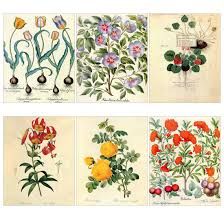 |
| SlideServe | PPT - The Juliana Anicia Codex : 1500 Year Anniversary of a Dioscoridean Recension PowerPoint Presentation - ID:3639089 | 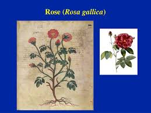 |
| The Art Scavenger | Free Vintage Floral Ephemera Printables — The Art Scavenger | 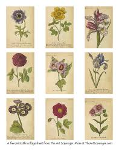 |
| Plant-Forms Ornamentally Treated - Sweet Briar | 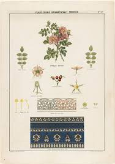 | |
| Photos.com | Roses 1613 #3 by Heritage Images |  |
| Dreamstime.com | A Collection of AI-generated Logos Featuring Abstract Designs and Symbols, Such As Stock Illustration - Illustration of symbols, sports: 397526440 | 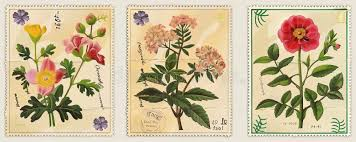 |
| Alamy | Victorian funeral flowers hi-res stock photography and images - Page 2 - Alamy | 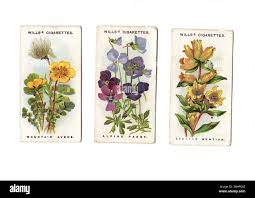 |
| Etsy | İndian Hand Painting Bookpicture Red Roses - Etsy | 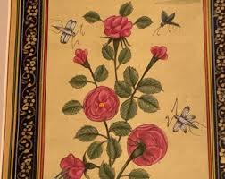 |
| HipStamp | State of Oman Stamp-World Beautiful Lovely Flowers MNH Full Sheet Very Fine | Middle East - Oman, Stamp / HipStamp | 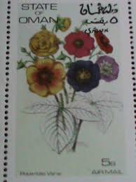 |
| INPRNT | Canvas Prints by Casey Shaffer - INPRNT | 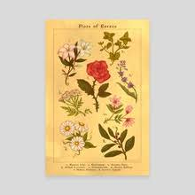 |
| Marshall Rare Books | Contrafayt Kreüterbuch: nach rechter vollkommener art vnd Beschreibungen der Alten, besstberümpten ärtzt, vormals in Teütscher sprach, der masszen nye gesehen noch im Truck auszgegangen. - Marshall Rare Books | 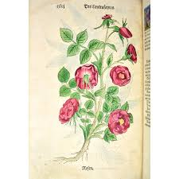 |
| 16 Mini canvas art ideas | mini canvas art, mini canvas, canvas art | 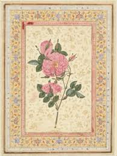 | |
| HipStamp | Manama 1969 Sc 242-7 flower CTO BLK(4) set FU | Middle East - Bahrain, General Issue Stamp / HipStamp | 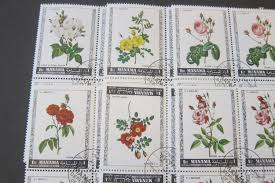 |
| Timeless Intaglio | Weinmann 18th Century Hand Colored Botanical Engraving "Horminum Peregrinum" — Timeless Intaglio: Rare Prints, Maps & Books | 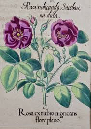 |
| Pngtree | Vintage Botanical PNG Image, Vintage Botanical Flower, Painting, Flowers, Hand Painted PNG Image For Free Download | 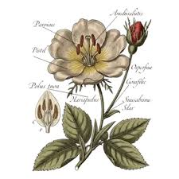 |
| Etsy | Roses and Orchids, DIGITAL Postage Stamps. Vintage Flowers, Ca. 1950-1980. Instant Download, Printable 300 DPI - Etsy | 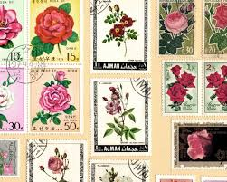 |
| Greg - Plant Identifier & Care | Any vintage succulent illustrations to share? | |
| Alamy | Delicate blue roses intertwined hi-res stock photography and images - Alamy |